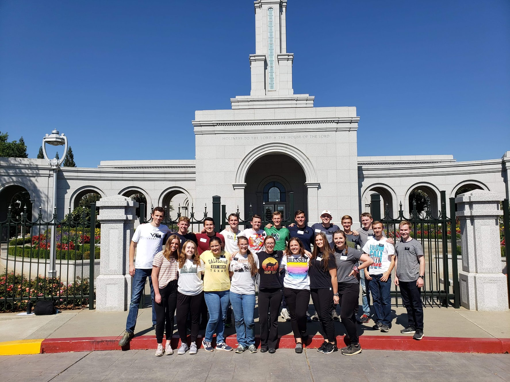

Résumé
Bruyn D. Decker | Education | Work Experience | Service | Skills | Awards & Interests
Education
Jan 2018 – Apr 2024: Brigham Young University
- GPA 3.72 / 4.00
- ACT 34 / 36, 99th Percentile
- Ray Zinn Family Scholarship
Work Experience
May 2022 – Jul 2022: Youth Counselor, For Strength of Youth Conferences (DeLand, FL and Provo, UT)
- Led and mentored groups of youth ranging from ages 13-18, worked with 100+ youth over time, identified needs and problems of these youth
- Facilitated group discussion and instructed activities
- Coordinated schedules and instruction with co-workers while configuring to group needs
Aug 2021 – April 2022, Jan 2021 – Apr 2021: Resident Assistant, Brigham Young University (Provo, UT)
- Planned and organized weekly community development meetings based on observed needs
- Received formal training on issues faced by college students living in a dormitory setting
- Inspected buildings for security and maintenance issues
- Educated over 60 residents on campus resources and on-campus housing policies
- Filed detailed incident reports
Apr 2021 – Aug 2021: Conference Assistant, Brigham Young University (Provo, UT)
- Facilitated youth summer camp building check-ins, serviced over 4,000 youth
- Roved on-campus area, assisting with housing issues and checking for camp safety
- Represented residence hall at an information desk, servicing students and visitors
- Performed manual labor
Nov 2020 – Dec 2020: Whole Foods Shopper, Amazon (Omaha, NE)
- Shopped in store to stage online orders
- Memorized store layout and developed ability to quickly locate goods
- Organized goods into storage categories
- Delivered goods for in-store and parking lot grocery pickups, requiring customer relations skills
Jan 2018 – Aug 2018: Custodial Worker, Brigham Young University (Provo, UT)
- Maintained a clean and pleasant dormitory environment by dusting, sweeping, cleaning windows, and vacuuming
- Kept janitorial closets clean and organized
- Learned and followed protocols for dealing with potentially dangerous chemicals
- Performed daily checklists throughout facilities, including cleaning floors, wiping down entryways and stairwells, collecting trash, etc.
- Promoted to specialty floor crew
Leadership & Service
Oct 2018 – Oct 2020: Volunteer Missionary, The Church of Jesus Christ of Latter-day Saints (Sacramento, CA)
- Established and initiated social media outreach to community; helped manage and participate in content creation for local Facebook page
- Prepared and presented trainings
- Worked with and managed various groups and teams, focusing on team motivation and team training.
Skills
- Database Modeling
- SQL
- Flowcharting
- Excel Automation (VBA)
- Tableau (data analytics and visualization)
- Statistics in Excel, including prediction
- Solver (optimization with Excel)
- Web Development (HTML, CSS)
- Basic Photoshop
- Video Editing
Awards & Interests
- National Merit Semifinalist
- Eagle Scout, Boy Scouts of America
- Personal investment portfolio
- Assisted in scripting and filming of a 40-minute film
- Wrote a 171-page book manuscript
- Athletic interests: tennis, track and field, cross country, baseball
- Papillion La-vista South High School STEM academy 2014-2017

Return to Top